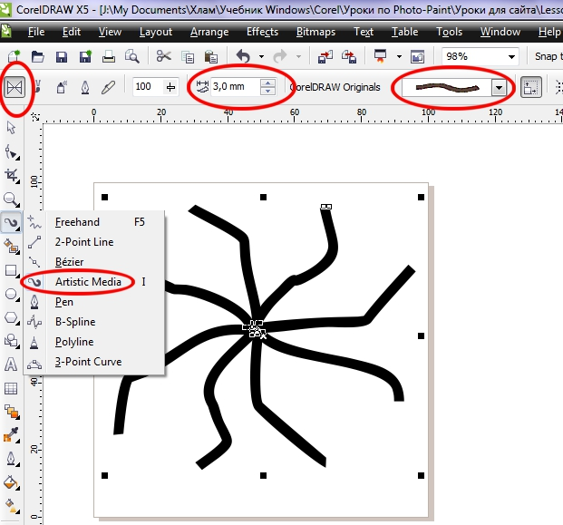
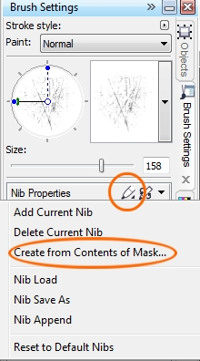
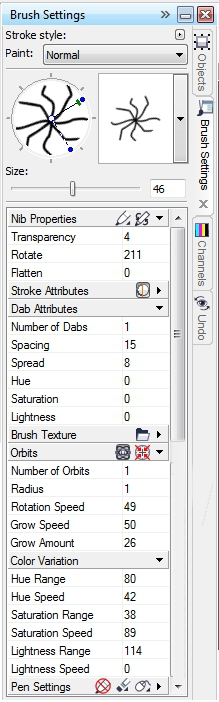
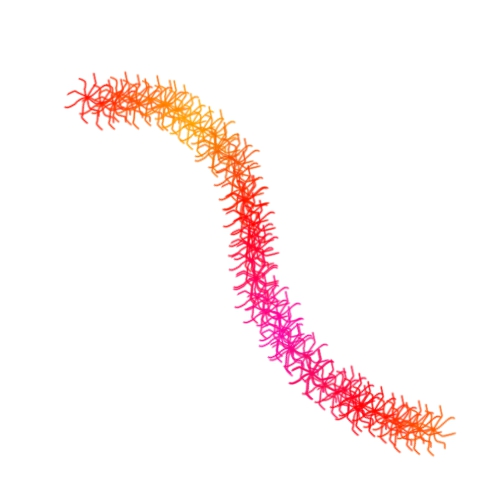
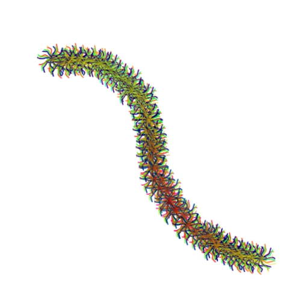

Новогодняя мишура
В этом уроке попробуем создать силами Photo-Paint новогоднюю мишуру. Несмотря на «неказистость» задачи и конечного результата, для ее реализации потребуется приложить немало усилий. К тому же, для ее выполнения, я опять воспользовался помощью Corel Draw.
1. Первое, что было нужно сделать – создать кисть для мишуры. Для этого в Corel Draw создайте документ 100х100 мм, разрешение можете выбрать 96 dpi. На Панели инструментов выберите инструмент Artistic Media, а на Панели свойств щелкните кнопку инструмента Preset. На Панели свойств выберите тип заготовки и установите толщину Stroke width = 3 мм. и нарисуйте форму будущей кисти (рис. 1).

Выделите все, дважды щелкнув на инструменте Pick Tool (Указатель) и скопируйте в Буфер обмена.
2. Запустите Photo-Paint и создайте новый документ 500х500 рх и разрешением 96 dpi. Вставьте из Буфера обмена скопированную «кисть».
3. В открывшемся диалоговом окне Resample, ничего не меняя щелкните ОК.
4. Создайте из вставленного объекта маску, нажав Ctrl + M. В докере Object (Объекты) удалите вставленный объект. У вас останется только маска, повторяющая форму объекта.
5. Выберите на панели Toolbox (Набор инструментов) инструмент Fill (Заливка) и залейте маску черным цветом.
6. Выберите на панели Toolbox (Набор инструментов) инструмент Paint (Краска) (горячая клавиша Р) и откройте докер Brush Settings (Настройки кисти) (Ctrl + F8). В докере, в группе параметров Nib Properties (Свойства кончика), вызовите меню и выберите команду Create from Contents of Mask (Создать из содержимого маски) (рис. 2). В диалоговом окне Create a Custom Brush (Создание специальной кисти), щелкните ОК. Кисть готова.

7. Теперь либо создайте еще один новый документ или отмените все действия, чтобы у вас был пустой документ. В докере Brush Settings (Настройки кисти) установите параметры, как показано на рис. 3, за исключением группы Orbits (Орбиты), т. к. их нужно будет отключить.

8. Теперь выберите в Палитре желаемый цвет краски, щелкнув на нем мышью. Сделайте один мазок кистью (рис. 4).

9. С помощью интерактивного элемента управления кистью, в верхней части докера, измените угол наклона кисти, примерно на 25-30 градусов. Измените цвет кисти.
10. Выполните команду Edit > Repeat Brush Stroke (Правка > Повторить Мазок кистью) или нажмите Ctrl + L (рис. 5). Только не перепутайте с командой Edit > Repeat Brushstroke (Правка > Повтор Мазка кисти). Первая команда на самом деле является Повтором последнего действия, а вторая… это отдельная история.
На рис. 5, слева - показан один мазок кистью, справа - 2 мазка.
11. Повторите шаг 10 несколько раз (примерно от 3 до 5 раз). В последний раз выберите в качестве цвета краски – черный цвет. Но увеличьте прозрачность кисти (я увеличил прозрачность до 45). Тут выбирайте по своему усмотрению. Или увеличивайте прозрачность, или делайте мягче кисть. Руководствуйтесь собственным вкусом. Однако возможен вариант, что вас не устроит результат, после нанесения мазка черным цветом. В этом случае, нанесите еще 2-3 мазка другим цветом, как описано в пункте 10.
Конечный результат показан на рис. 6

Примечание.
Когда вы попробуете создать сами нечто подобное, самый сложный момент, это правильно подобрать параметры Spacing и Spread в группе параметров Dab Attributes докера Brush Settings (Настройки кисти). Конечно, на результат окажет влияние и сама форма кисти, созданная в Corel Draw. В любом случае, повозиться придется немало.
Также в прикрепленных файлах, есть файл .cdr с созданной кистью.